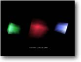

Lighting Aim: Lighting a scene
|
 |
So we can now move objects (and ourselves) around, texture objects, animate... so what shall we look at now ?
How about lighting, used correctly we can make great use of it to really give our little world
ambiance.
By default B3D will already give us a light in our scene, pointing directly into the screen. Think of it as a torch stuck
on top of the camera, pointing at whatever we can see.
Sourcecode time:
| Graphics3D 800,600 SetBuffer BackBuffer() camera=CreateCamera() CameraViewport camera,0,0,800,600 AmbientLight 0,0,0 ;cube 1 cube=CreateCube() PositionEntity cube,0,0,5 light=CreateLight(3) LightColor light,100,20,30 LightConeAngles light,0,45 PositionEntity light,0,0,0.5 LightRange light,8 PointEntity light,cube ;cube 2 cube2=CopyEntity(cube) PositionEntity cube2,-5,0,8 light2=CreateLight(3) LightColor light2,40,150,60 LightConeAngles light2,0,45 PositionEntity light2,-5,0,4.5 LightRange light2,8 PointEntity light2,cube2 ;cube 3 cube3=CopyEntity(cube) PositionEntity cube3,5,0,8 light3=CreateLight(3) LightColor light3,70,80,190 LightConeAngles light3,0,45 PositionEntity light3,5,0,4.5 LightRange light3,8 PointEntity light3,cube3 While Not KeyHit(1) TurnEntity cube,0.1,0.2,0.3 TurnEntity cube2,0.3,0.2,0.1 TurnEntity cube3,0.3,0.2,0.1 UpdateWorld RenderWorld Text 310,500,"Coloured Lighting Demo" Flip Wend End |
There's quite a few new commands to look at here.
Remember that torch I spoke about, well the first new command we will learn is strictly for changing the colour of the beam. (so to speak)
| AmbientLight 0,0,0 |
This sets the light to black, so that any additional lights we use will show up with full effect. First thing to remember when using this command is that the colour values range from 0 to 255, and we have 3 separate colour shades to think of RED, GREEN & BLUE. (the same as a TV)
By changing these values we can just about get any colour we want, such as setting them all to 255 will result in the colour white. It's usually easier to work out the values you will need from a paint program such as Paintshop Pro.
| light=CreateLight(3) |
B3D at present lets us use three different types of lighting. As with the ANMATE instruction these are selected with flags, these are:
|
1: AREALIGHT - Which will light the whole surrounding area around it. 2: POINTLIGHT - A directional light that can light a specific area 3: SPOTLIGHT - Very similar to POINT, but can give off more light on a subject area than using POINTLIGHT. |
For this demo I chose to use SPOTLIGHT.
| LightColor light,100,20,30 |
Same as the AMBIENTLIGHT instruction, this command lets us select the colour of the light. Here I've set it up so that RED=100, GREEN=20 and BLUE=30 - which gives us a nice reddish glow.
| LightConeAngles light,0,45 |
We use this instruction to control the angle of light that comes from our spotlight. In this case I've set it up to 45 degrees, In-other-words.. The light has a radius of 45 degrees, any part of the object that is outside of this will not be lit.
| PositionEntity light,0,0,0.5 |
We move the light into position.
| LightRange light,8 |
This controls the distance of the light, I set it at 8 units.. If I wanted the light to shine further into the distance then I would increase this value.
| PointEntity light,cube |
This command will point the light at our cube object. No matter where are light is
positioned it will point towards the cube. But if you then move the object or light - you will have to repoint it with this command.
Something else you should think about is whether the light and object can see each other. (the LIGHTRANGE instruction)
I won't go into details with the rest of the program as you should be able to work out what is happening without any additional help.
Where's the fancy lensflare commands, I can hear you cry. Well at present B3D doesn't have any readymade, built-in commands - so its really up to you the programmer - to come up with these effects. And believe me it is possible with a little careful effort. I've seen some of the Beta Testers come up with lighting effects that would equal Unreal !. But then this is a subject for another tutorial...